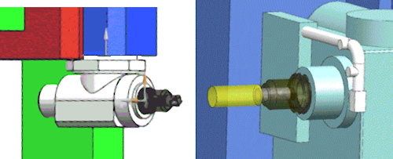

Tool holder display
What is it?
When you select or edit a tool, NX now displays the defined holder or device to which the tool is mounted. This can include the display of a head.


Why should I use it?
You can verify if the defined holder is correct before you start a simulation.
Where do I find it?
|
Application |
Manufacturing |
|
Toolbar |
Insert→Create Tool |
|
Operation Navigator |
Select a tool Right-click a tool→Edit Double-click a tool |